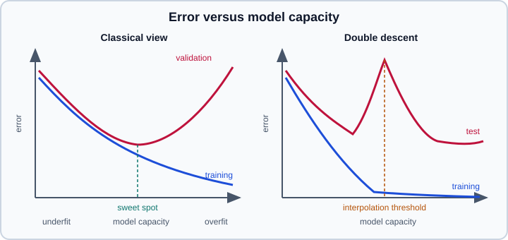

Generalization, Bias–Variance & Regularization
|
This content was generated with the assistance of AI and should be verified against the official documentation before being relied on in production. |
Training a model is an optimization problem, but the goal is not a low training loss. The goal is generalization: low error on new data drawn from the same process. Everything in this page follows from that gap. It explains how the gap is measured, why it appears, how it depends on model capacity and data size, and which techniques (collectively called regularization) shrink it.
The runnable examples use scikit-learn; deep learning remarks refer to PyTorch 2.15 and TensorFlow 2.21 with Keras 3.15. Examples were run on Python 3.13 with scikit-learn 1.9.1 on 2026-11-01. The data-science level treatment is in Machine Learning Fundamentals and Model Evaluation & Validation; this page goes deeper on the theory and on the regularizers that matter for neural networks, and links the optimization side in Gradient Descent & Optimization and the loss side in Loss Functions & Information Theory.
Generalization error
Let \(f\) be a trained model, \(\ell\) a loss and \(p(x, y)\) the data-generating distribution. Three quantities matter:
-
the training error \(\hat{R}_{\text{train}}(f) = \frac{1}{n}\sum_{i=1}^{n} \ell(f(x_i), y_i)\), measured on the samples used to fit \(f\);
-
the generalization error (or risk) \(R(f) = \mathbb{E}_{(x,y)\sim p}\,[\ell(f(x), y)]\), which is never observable directly;
-
the generalization gap \(R(f) - \hat{R}_{\text{train}}(f)\), usually positive because the parameters were chosen to make the training error small.
Because \(R(f)\) cannot be computed, it is estimated on held-out data that played no role in fitting or in choosing among models (a validation set for choices, a test set for the final report). The splitting and cross-validation machinery is covered in Cross-Validation & Splitters. The central assumption is that training and future data are independent and identically distributed (i.i.d.). When that assumption fails (time series, grouped rows, a deployment population that differs from the training one) the held-out estimate is optimistic however carefully it was computed; see Common Pitfalls: Leakage & Randomness.
Underfitting and overfitting
-
A model underfits when it is too simple (or too constrained, or trained too briefly) to capture the signal. Training and validation error are both high and close together.
-
A model overfits when it fits idiosyncrasies of the training sample (noise, accidental correlations, memorized examples). Training error is low, validation error is much higher, and the gap grows with capacity and with training time.
The two diagnoses call for opposite remedies, so check which one applies before changing anything. Underfitting asks for more capacity, better features or longer or better optimization. Overfitting asks for more data, simpler models or regularization.
The bias–variance decomposition
For squared error, the expected test error of a learning algorithm at a point \(x\) decomposes into three parts. Assume \(y = f^{*}(x) + \varepsilon\) with noise \(\mathbb{E}[\varepsilon] = 0\) and \(\operatorname{Var}(\varepsilon) = \sigma^2\), and let \(\hat{f}\) be the model fitted on a random training set. Then
\[ \mathbb{E}\big[(y - \hat{f}(x))^2\big] = \underbrace{\big(f^{*}(x) - \mathbb{E}[\hat{f}(x)]\big)2}_{\text{bias}2} + \underbrace{\mathbb{E}\big[(\hat{f}(x) - \mathbb{E}[\hat{f}(x)])^2\big]}_{\text{variance}} + \underbrace{\sigma^2}_{\text{irreducible error}} \]
where the expectation is over training sets (and over the noise in \(y\)).
-
Bias is the systematic error of the algorithm: how far the average model, over many training sets, is from the truth. It comes from wrong assumptions: a straight line fitted to a curve, a tree too shallow to express an interaction.
-
Variance is how much the fitted model changes from one training set to another. It comes from flexibility combined with limited data: a high-degree polynomial fitted to 30 points reacts to every noise value.
-
Irreducible error is the noise in the target itself. No model can remove it, which is why a validation score of 100% on noisy labels is a warning sign rather than a goal.
The classical picture is a trade-off: raising capacity lowers bias and raises variance, so validation error is U-shaped with a sweet spot. The decomposition is exact only for squared error. For other losses (cross-entropy, 0-1 loss) analogous decompositions exist but are less clean, so use the bias–variance language as intuition rather than as something to compute. You cannot measure bias and variance on a single dataset, because the definitions average over training sets; you can approximate them by refitting on bootstrap resamples, but in practice the learning and validation curves below are the working tools.

Capacity, and why counting parameters is not enough
Capacity is the richness of the set of functions a model can represent. More parameters usually means more capacity, but the relation is loose: a deep tree has few parameters per leaf yet can isolate every training point, while a linear model with strong weight decay has many weights but a heavily restricted effective function class. Classical learning theory bounds the generalization gap by quantities such as the VC dimension or Rademacher complexity, which grow with capacity and shrink with the number of samples \(n\); the bounds are rarely tight for deep networks, but they explain the two levers that always work: more data and less effective capacity.
Diagnosing with curves
Validation curve: sweep one hyperparameter
A validation curve plots training and cross-validated scores while one hyperparameter changes. The following example fits polynomials of increasing degree to a noisy sine and shows a validation error that falls, flattens and then explodes while the training error keeps falling.
import numpy as np
from sklearn.linear_model import LinearRegression
from sklearn.model_selection import validation_curve
from sklearn.pipeline import make_pipeline
from sklearn.preprocessing import PolynomialFeatures, StandardScaler
rng = np.random.default_rng(0)
X = rng.uniform(-3, 3, size=(60, 1))
y = np.sin(X[:, 0]) + rng.normal(scale=0.3, size=60)
degrees = np.arange(1, 16)
model = make_pipeline(PolynomialFeatures(), StandardScaler(), LinearRegression())
train, val = validation_curve(
model, X, y,
param_name="polynomialfeatures__degree", param_range=degrees,
cv=5, scoring="neg_mean_squared_error",
)
for d, tr, va in zip(degrees, -train.mean(axis=1), -val.mean(axis=1)):
print(f"degree {d:2d} train MSE {tr:.3f} validation MSE {va:.3f}")
print("best degree:", degrees[np.argmin(-val.mean(axis=1))])Output (abridged to every other degree from 7 on):
degree 1 train MSE 0.281 validation MSE 0.317 degree 2 train MSE 0.279 validation MSE 0.330 degree 3 train MSE 0.084 validation MSE 0.142 degree 4 train MSE 0.075 validation MSE 0.139 degree 5 train MSE 0.074 validation MSE 0.162 degree 7 train MSE 0.066 validation MSE 0.156 degree 9 train MSE 0.064 validation MSE 0.095 degree 11 train MSE 0.061 validation MSE 3.764 degree 13 train MSE 0.056 validation MSE 5.513 degree 15 train MSE 0.052 validation MSE 101.319 best degree: 9
Degrees 1 and 2 underfit (both errors high), degrees 3 to 9 are the useful range, and beyond degree 10 the validation error explodes. The curve is noisy with 60 points (degrees 5 and 7 are worse than degrees 4 and 9), a reminder to prefer the simplest model whose error is within one standard error of the best, and to repeat the estimate when data is scarce. Source: scikit-learn user guide: Validation curves and learning curves.
Learning curve: sweep the training-set size
A learning curve plots the same scores against the number of training samples. Its shape answers a different question: would more data help?
-
Training and validation scores converge at a poor level: high bias. More data will not help; add capacity or features.
-
A large persistent gap, with the validation score still rising as samples are added: high variance. More data, regularization or a simpler model will help.
-
Converged at a good level: stop; further effort goes to data quality or a different metric.
from sklearn.datasets import make_classification
from sklearn.ensemble import RandomForestClassifier
from sklearn.linear_model import LogisticRegression
from sklearn.model_selection import learning_curve
X, y = make_classification(
n_samples=2000, n_features=20, n_informative=4, flip_y=0.05, random_state=0
)
candidates = [
("logreg", LogisticRegression(max_iter=1000)),
("forest", RandomForestClassifier(n_estimators=100, random_state=0)),
]
for name, est in candidates:
sizes, train, val = learning_curve(
est, X, y, train_sizes=[0.1, 0.3, 0.6, 1.0], cv=5, scoring="accuracy"
)
print(name)
for n, a, b in zip(sizes, train.mean(axis=1), val.mean(axis=1)):
print(f" n={n:5d} train {a:.3f} val {b:.3f} gap {a - b:.3f}")Output:
logreg n= 160 train 0.704 val 0.628 gap 0.076 n= 480 train 0.690 val 0.651 gap 0.039 n= 960 train 0.685 val 0.658 gap 0.027 n= 1600 train 0.665 val 0.657 gap 0.008 forest n= 160 train 1.000 val 0.762 gap 0.238 n= 480 train 1.000 val 0.835 gap 0.165 n= 960 train 1.000 val 0.859 gap 0.141 n= 1600 train 1.000 val 0.884 gap 0.116
The linear model has converged at 0.66 accuracy: it is biased for this nonlinear problem, and more rows would not help. The forest memorizes the training set (training accuracy 1.0 at every size) yet its validation score keeps rising with more data, a variance-dominated profile that benefits from more samples or from shallower trees. Source: scikit-learn user guide: Validation curves and learning curves.
Reading deep-learning training curves
For neural networks the same diagnosis uses loss and metric per epoch. Plot training and validation loss together. A validation loss that turns upward while the training loss keeps falling marks the onset of overfitting; the epoch of the validation minimum is the natural place for early stopping. If the training loss itself stalls high, the problem is optimization (learning rate, initialization, bugs) rather than generalization; see Tuning Deep Networks in Practice.
Double descent and modern over-parameterization
The U-curve says that a model able to fit the training set exactly must generalize badly. Modern practice contradicts this: large neural networks routinely reach zero training error and still generalize well. The reconciliation, documented empirically by Belkin et al. and, for deep networks, by Nakkiran et al. ("Deep Double Descent"), is that test error as a function of capacity can show two descents:
-
In the under-parameterized regime the classical U-curve applies.
-
At the interpolation threshold, where the model has just enough capacity to fit the training data exactly, test error peaks, because the fit is forced through every noisy point with no slack.
-
Beyond it, in the over-parameterized regime, test error falls again as capacity grows, because among the many interpolating solutions the optimizer (gradient descent, with its implicit bias toward small-norm solutions) picks a smooth one.
The same effect appears along other axes: test error can peak and then fall as the number of training epochs grows ("epoch-wise double descent") and, in some settings, adding training data can transiently hurt ("sample-wise double descent"). It is most visible with label noise and is attenuated by regularization, so with tuned weight decay or early stopping the peak often disappears. Practical consequences:
-
Do not conclude from the classical U-curve that a bigger network is always worse; test it.
-
Do not conclude that overfitting no longer matters: a network that interpolates noisy labels still generalizes worse than one trained with sensible regularization, and the model-selection tools of this page still apply.
-
A model close to the interpolation threshold (roughly as many parameters as samples, as in unregularized least squares with \(p \approx n\)) is the worst place to be.
Regularization
Regularization is any modification of a learning algorithm intended to reduce generalization error, possibly at the cost of training error. The families below act on different parts of the system, and in deep learning several are combined.
| Family | Mechanism | Typical tools |
|---|---|---|
Explicit penalty on the weights |
Adds a norm of the parameters to the loss |
L2 (weight decay), L1, elastic net |
Constrain the hypothesis class |
Fewer or smaller functions are available |
Tree depth, |
Constrain the optimization |
Training stops or is slowed before interpolation |
Early stopping, small learning rate, few epochs |
Inject noise or invariances |
Training sees perturbed versions of the data |
Data augmentation, dropout, label smoothing, input and weight noise, mixup |
Average several models |
Reduces variance of the predictions |
Bagging, ensembles, snapshot ensembles, weight averaging |
More information |
Reduces the variance directly |
More data, transfer learning, pre-training, multi-task learning |
L2 regularization and weight decay
L2 regularization adds a squared-norm penalty to the objective:
\[ J(w) = \frac{1}{n}\sum_{i=1}^{n} \ell\big(f(x_i; w), y_i\big) + \frac{\lambda}{2}\,\lVert w \rVert_2^2 , \]
where \(\lambda \ge 0\) controls the strength. The gradient gains a term \(\lambda w\), so each plain gradient-descent step with learning rate \(\eta\) becomes
\[ w \leftarrow (1 - \eta\lambda)\,w - \eta\,\nabla_w \hat{R}(w), \]
which shrinks ("decays") the weights toward zero before applying the usual update; hence the name weight decay. For linear models this is ridge regression (a Gaussian prior on the weights in the Bayesian reading), has a closed-form solution and gives stable coefficients for correlated features. Biases are normally excluded.
Two practical details trip people up. First, with adaptive optimizers (Adam and relatives) L2 regularization added to the loss and decoupled weight decay are not equivalent: Loshchilov and Hutter showed that adding \(\lambda w\) to the gradient makes the decay interact with the adaptive per-parameter scaling, and proposed AdamW, which applies the decay directly to the weights. Use torch.optim.AdamW in PyTorch, and keras.optimizers.AdamW (or the weight_decay argument of Keras optimizers) in Keras, rather than putting L2 in the loss, when you want weight decay with Adam; see Optimizers & Learning-Rate Schedules. Second, features must be on comparable scales for any norm penalty to treat them fairly; put a scaler in front of the model inside a pipeline.
L1 regularization and sparsity
L1 regularization penalizes the absolute values: \(\lambda\lVert w\rVert_1 = \lambda\sum_j |w_j|\). Unlike L2 it drives many weights exactly to zero (a Laplace prior in the Bayesian reading), so it performs feature selection while fitting; this is the lasso. Elastic net mixes both penalties, \(\lambda\big(\rho\lVert w\rVert_1 + \tfrac{1-\rho}{2}\lVert w\rVert_2^2\big)\), and is preferable when features are strongly correlated, where the lasso tends to pick one arbitrarily. The L1 penalty is not differentiable at zero, so solvers use coordinate descent or proximal methods; the sparsity of the result depends on the optimizer, which is one reason L1 on a neural network trained with plain SGD seldom gives exact zeros.
The following example uses a dataset where only 5 of 60 features carry signal and only 48 samples are used for training, the regime where an unpenalized fit interpolates the training set. The penalty strength is chosen by cross-validation with RidgeCV and LassoCV.
import numpy as np
from sklearn.datasets import make_regression
from sklearn.linear_model import LassoCV, LinearRegression, RidgeCV
from sklearn.model_selection import train_test_split
from sklearn.pipeline import make_pipeline
from sklearn.preprocessing import StandardScaler
X, y = make_regression(
n_samples=80, n_features=60, n_informative=5, noise=10.0, random_state=0
)
X_tr, X_te, y_tr, y_te = train_test_split(X, y, test_size=0.4, random_state=0)
alphas = np.logspace(-2, 3, 30)
models = {
"ols": LinearRegression(),
"ridge (CV alpha)": RidgeCV(alphas=alphas),
"lasso (CV alpha)": LassoCV(alphas=alphas, cv=5, random_state=0),
}
for name, est in models.items():
pipe = make_pipeline(StandardScaler(), est).fit(X_tr, y_tr)
print(f"{name:17s} train R2 {pipe.score(X_tr, y_tr):.3f} "
f"test R2 {pipe.score(X_te, y_te):.3f}")
lasso = make_pipeline(StandardScaler(), LassoCV(alphas=alphas, cv=5, random_state=0))
lasso.fit(X_tr, y_tr)
print("non-zero Lasso coefficients:", int(np.sum(lasso[-1].coef_ != 0)), "of", X.shape[1])Output:
ols train R2 1.000 test R2 0.770 ridge (CV alpha) train R2 0.995 test R2 0.701 lasso (CV alpha) train R2 0.995 test R2 0.992 non-zero Lasso coefficients: 14 of 60
Ordinary least squares interpolates the 48 training rows (R2 of 1.0) yet still scores 0.77 on held-out data, the minimum-norm interpolating solution being a mild example of the over-parameterized regime above. Ridge did not help here because the truth is sparse and ridge keeps every feature; the lasso, whose assumption matches the data, recovers the structure and reaches 0.99. Which penalty wins depends on the data, so let cross-validation decide. Source: scikit-learn user guide: Linear Models.
For classifiers, scikit-learn parameterizes the strength inversely: in LogisticRegression and SVC the parameter C is the inverse of the regularization strength (smaller C means stronger regularization), while Ridge, Lasso and SGDClassifier use alpha directly. Mixing the two conventions is a frequent source of tuning mistakes.
Early stopping
Early stopping monitors a validation metric during training and halts when it has not improved for a given number of epochs or boosting rounds (the patience), then keeps the best weights. For gradient-descent training of a flexible model, a small number of steps from a small initialization acts much like an L2 penalty, which is why it works as a regularizer and why it costs nothing extra. Rules for using it honestly:
-
The monitored set must be separate from the test set. Using the test set for stopping leaks it into model selection.
-
Keep the best weights, not the last ones (
restore_best_weights=Truein Keras; keep a copy of the beststate_dictin PyTorch). -
Choose patience large enough to ride out noisy validation curves, and note that with a learning-rate schedule the validation loss can plateau and improve again after a decay step.
-
With double descent present (see above), early stopping can stop before the second descent. Evaluate if you suspect it.
scikit-learn estimators with iterative training expose it directly. The gradient boosting estimator below uses a held-out fraction of the training data and stops when the score stops improving.
from sklearn.datasets import make_classification
from sklearn.ensemble import HistGradientBoostingClassifier
from sklearn.model_selection import train_test_split
X, y = make_classification(
n_samples=5000, n_features=20, n_informative=5, flip_y=0.1, random_state=0
)
X_tr, X_te, y_tr, y_te = train_test_split(X, y, test_size=0.3, random_state=0)
clf = HistGradientBoostingClassifier(
max_iter=1000,
learning_rate=0.1,
early_stopping=True,
validation_fraction=0.15,
n_iter_no_change=10,
random_state=0,
).fit(X_tr, y_tr)
print("trees used:", clf.n_iter_, "of 1000")
print("test accuracy:", round(clf.score(X_te, y_te), 3))Output:
trees used: 44 of 1000 test accuracy: 0.908
With 10% label noise the validation score stops improving after a few dozen trees, so training halts at 44 of the 1000 allowed. Source: scikit-learn user guide: Ensembles, early stopping in gradient boosting. The deep-learning equivalents are the Keras EarlyStopping callback and hand-written patience logic in a PyTorch loop; Lightning and other libraries package it as a callback. For why HistGradientBoostingClassifier is the usual boosting estimator, see Histogram Gradient Boosting.
Data augmentation, more data and transfer learning
The most effective regularizer is more real data, and the next best is data augmentation: generating plausible new samples by applying transformations that do not change the label (flips, crops, color jitter, noise for images; time or pitch shifts for audio; back-translation or token masking for text). Augmentation encodes prior knowledge about invariances, so it must match the task: flipping horizontally is fine for cats and wrong for text characters. Augment only the training split. For tabular data, augmentation is rarely helpful beyond oversampling inside a pipeline. Related ideas include mixup (training on convex combinations of pairs of examples and labels) and CutMix. Reusing a network pre-trained on a large dataset (see Transfer Learning, Fine-Tuning & Foundation Models) is regularization by information: the pre-trained weights already encode general features, so far fewer labeled samples are needed.
Dropout, label smoothing and normalization
Dropout randomly zeroes each activation with probability \(p\) during training and rescales the survivors by \(1/(1-p)\), so no change is needed at inference. It prevents units from co-adapting and approximates averaging an exponential number of thinned networks. It is switched off at inference time through the training/eval mode (model.eval() in PyTorch; Keras handles it with the training argument), and forgetting to switch modes is a classic evaluation bug. Label smoothing replaces a hard one-hot target with a softened distribution, which discourages overconfident logits and often improves calibration. Batch and layer normalization are designed to ease optimization, but the noise of batch statistics also acts as a mild regularizer. These deep-network regularizers are developed in Training Deep Networks: Initialization, Normalization & Regularization.
Ensembling
Averaging the predictions of several models whose errors are not perfectly correlated lowers variance without raising bias. If \(M\) models each have prediction variance \(\sigma^2\) and pairwise correlation \(\rho\), the variance of their average is \(\rho\sigma^2 + \frac{1-\rho}{M}\sigma^2\). Bagging decorrelates models by training each on a bootstrap sample (random forests add random feature subsets), and boosting instead reduces bias by fitting models sequentially to the remaining errors. Ensembles of neural networks with different random seeds are a strong, if expensive, baseline for accuracy and for uncertainty estimates. See Random Forests & Bagging and Voting, Stacking & Multiclass.
Capacity control in classical models
Many scikit-learn hyperparameters are regularizers in disguise:
| Model | Capacity-control parameters |
|---|---|
Decision trees, forests |
|
Gradient boosting |
|
SVM |
|
k-nearest neighbours |
|
Linear and logistic regression |
|
Neural networks (MLP) |
|
The estimator pages in the scikit-learn sub-section describe each of them; the point here is that tuning them with cross-validation (see Grid, Randomized & Halving Search) is the same activity as choosing the regularization strength.
Putting it together: a regularization checklist
-
Establish a baseline and measure the gap between training and validation error.
-
If both errors are high, fix underfitting first (features, capacity, optimization) before regularizing.
-
If the gap is large, try in this order: more data or augmentation, a simpler model, early stopping, weight decay, dropout.
-
Tune the regularization strength on the validation set or with cross-validation; use a log scale (for example \(10^{-6}\) to \(10^{0}\)).
-
Use decoupled weight decay (AdamW) rather than L2 in the loss with adaptive optimizers.
-
Report the final number from a test set that no decision has touched.
Pitfalls
-
Tuning on the test set. Each look at it makes the estimate more optimistic; keep it for one final evaluation.
-
Fitting scalers, selectors or encoders on all the data before splitting. Anything that learns from data belongs inside the pipeline.
-
Leaving dropout on at inference or batch-norm layers in training mode when evaluating.
-
Assuming a zero training error always means overfitting; over-parameterized networks can interpolate and still generalize, which is why the validation score decides.
-
Penalizing the bias terms and the normalization parameters with the same decay as the weights; most recipes exclude them.
-
Comparing models with a single random split when the dataset is small: the difference between two models is often within the split-to-split noise.
-
Reading a learning curve from a single run. Plot the mean and spread over folds or seeds.
References
-
Google Machine Learning Crash Course: Overfitting, L2 regularization
-
Goodfellow, Bengio, Courville: Deep Learning, chapter 7 Regularization for Deep Learning
-
Goodfellow, Bengio, Courville: Deep Learning, chapter 5 Machine Learning Basics
-
Nakkiran et al.: Deep Double Descent: Where Bigger Models and More Data Hurt
-
Srivastava et al.: Dropout, a simple way to prevent neural networks from overfitting
-
scikit-learn user guide: Validation curves and learning curves